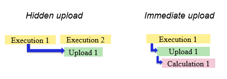
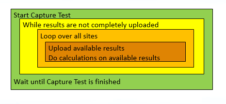

Using Immediate Upload in SmartRDI
SmartRDI supports the SmarTest 7.4.2 new feature - "Immediate upload" mode for captured data upload.
Immediate upload
It is introduced to fill the gap in using the hidden upload technology of the SmartCalc framework.
Immediate upload versus hidden upload
To achieve best throughput and multisite efficiency with V93000, the SmartCalc framework is used.
SmartCalc enables performing data upload and calculation while another test is being executed. This technology is called hidden upload. Hidden upload has two drawbacks:
- Binning is delayed (late binning)
- Another test with suitable execution time must be in place
- No other tests are available to hide uploads
- Late binning is not an option
The immediate upload technology fills this gap for digital capture tests by immediate upload and calculation which allows to upload result chunks of a started and running capture test and do calculations on this result chunk while test is running.
Immediate Upload is introduced with SmarTest 7.4.2 for digital capture tests. Supported by PS1600.


Immdiate upload only supports the digCap() class with two API functions: rdi.digCapImmediateUpload() and rdi.id().getImmediateVector().
In short, with a capability of uploading data and hiding calculation during the capture running, immediate upload improves tests performance especially when a huge amount of data are generated at a low capture speed.
Examples
Using immediate upload for data upload only
In the example below, digCapImmediateUpload() is used alone to upload digital
capture data immediately while the test is running. The upload of the captured data referenced
by "resultId" is started while the burst is executed.
rdi.digCapImmediateUpload("resultId");
RDI_BEGIN();
rdi.digCap("resultId").samples(...)...execute();
...
RDI_END(); // Raw Result upload within pattern run
rdi.id("resultId").getVector();
Using immediate upload for data upload and result calculation
In the example below, digCapImmediateUpload() is used together with
getImmediateVector() to upload digital capture data as well as hide result
calculation while the test is running.
rdi.digCapImmediateUpload("resultId");
RDI_BEGIN();
rdi.digCap("resultId").samples(SAMPLE_SIZE).bitPerWord(BPW).execute();
RDI_END( TA::NON_BLOCKING);
bool dataIsRemaining;
ARRAY_I resultChunk;
ARRAY_I uploadDataOffset(MAX_SITE_NUM);
while (dataIsRemaining)
{dataIsRemaining = false;
FOR_EACH_SITE_BEGIN()
site = CURRENT_SITE_NUMBER();
if (uploadDataoffset[site] < SAMPLE_SIZE/BPW-1)
{resultChunk=rdi.id("resultId").getImmediateVector(uploadDataOffset[site]);
uploadDataOffset[site] += resultChunk.size();
dataIsRemaining = true;
//-------------- calculation e.g. fill histogram array ---------------------------------
}
FOR_EACH_SITE_END()；
}
RDI_WAIT_TEST_DONE();
getImmediateVector() returns an array of vectors. The array size in SER mode
is calculated by dividing sampleSize with bitPerWord. So in this example, the maximum array size
equals to SAMPLE_SIZE divided by BPW. Pay attention that
in serial mode, the default setting for bitPerWord is 32.
In offline mode, the chunk size from each getImmediateVector() upload is 0. A
working online code may cause an endless loop in offline execution. It is recommended to define
an extra end loop criterion, for example, define the maximum number of loop executions.
Important: With SmarTest7.4.3.0 and 7.4.3.1, immediate upload only allows ONE result id in a pin.
Functional changes
- Introduced in SmartRDI 2.5.0